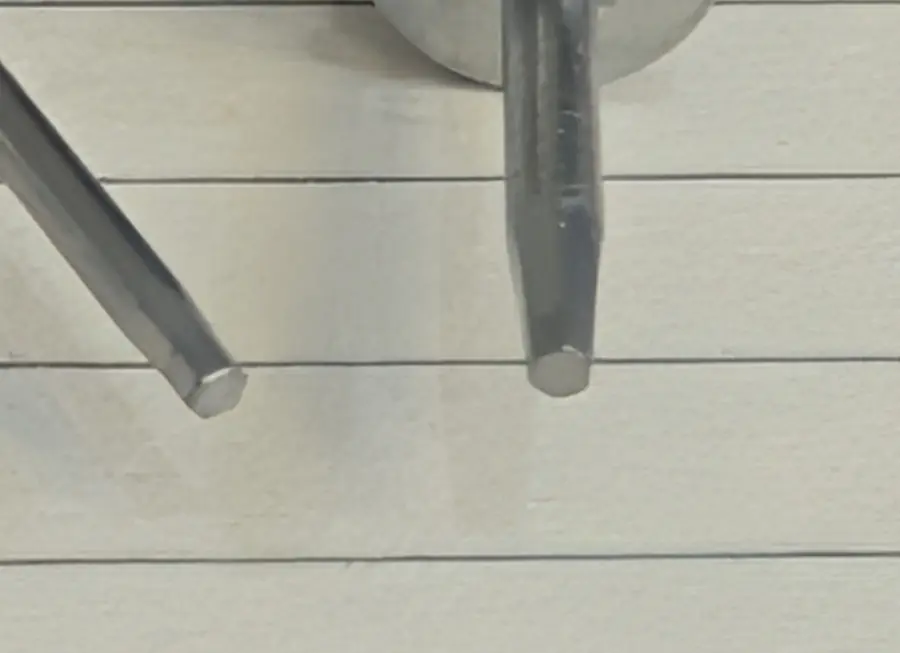

نسخه استخراجشده؛ ترجمه یا تأیید علمی انجام نشده است. وضعیت: captured
میروی پیچ اباتمنت یا پروتز را باز یا بسته کنی و آچار درست نمیگیرد. یا لق میزند، یا تا ته نمیرود، یا حس میکنی سر پیچ گرد شده. اولین حدس این است که پیچ هرز شده. واقعاً همین است؟

خیلی وقتها پیچ سالم است و فقط آچار و پیچ مال دو سیستم با گل پیچ متفاوتاند. اینکه آچار دو برند متفاوت روی هم سوار نمیشود را همه میدانند؛ ولی بیشتر ما ناخودآگاه سیستمهای کرهای را یک خانواده فرض میکنیم و خیال میکنیم آچار و پیچشان بین خودشان جابهجا میشود. این سیستمها در سایز گل پیچ، یعنی همان جایی که نوک آچار باید در آن بنشیند، با هم فرق دارند.
کل اختلاف ۰٫۰۵ میلیمتر است؛ به چشم نمیآید، ولی برای نشستن درست آچار همینقدر کافی است که کار را خراب کند. داخل هر گروه آچارها روی هم مینشینند؛ دردسر وقتی شروع میشود که از یک گروه به گروه دیگر بپری.
روی یک درگیری ناقص که گشتاور بدهی، نیرو گوشههای گل پیچ را گرد میکند. همان لحظه که فکر میکنی پیچ هرز شده، اگر زور بیشتری بیاوری یا آچار عوض کنی، همان فشار پیچ را واقعاً هرز میکند؛ تشخیص غلط خودش علت خرابی میشود.
ناهماهنگی سایز از همان اولین تماس روی پیچ نو پیداست، ولی هرز شدن واقعی بهمرور میآید. پس روی یک پیچ آکبند اگر آچار نگرفت، اول به سایز شک کن نه به پیچ.
اوستم و مگاژن (۱٫۲) و دنتیس (۱٫۲۵) هر سه پرکاربردند و کار اباتمنت کاستوم هم رایج است. در این کارها پیچی که با اباتمنت میآید لزوماً همسیستم آچار کیت تو نیست؛ و سایز گل پیچ را خود پیچ تعیین میکند، نه بدنهی اباتمنت.